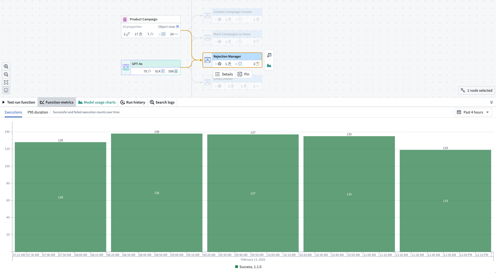
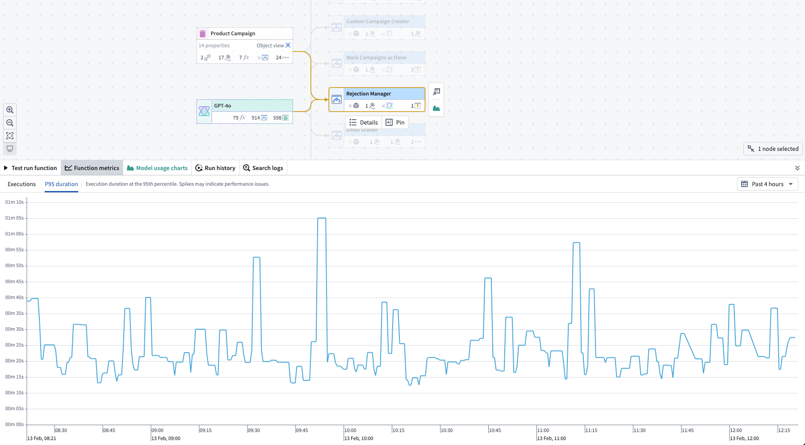

AIP Logic resources are backed by functions, and when an AIP Logic resource executes, metrics are surfaced for the underlying function execution, including success and failure counts and the P95 execution duration over the last 30 days.
You can view these metrics in Ontology Manager or in Workflow Lineage. In Workflow Lineage, select the AIP Logic node for a given execution. This provides visibility into:


You can also access run history, which provides a complete view of executions over the past seven days. Learn more about Ontology and AIP observability.
All metrics are updated in near-real-time using the latest data from the Foundry Telemetry Service (FTS). This ensures you have access to the most current information for monitoring, debugging, and maintaining the health of your AIP Logic resources.
Failure types for AIP Logic executions follow the same categories as function failure types. Refer to the function metrics documentation for a full list of failure categories.
To view AIP Logic metrics, you must be a viewer on the AIP Logic resource.